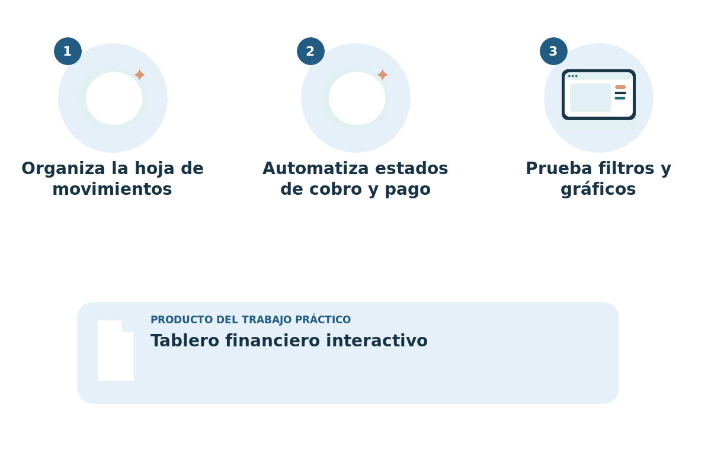

<div style="font-family: 'Segoe UI', Arial, sans-serif; color: #333; line-height: 1.6; max-width: 100%; margin-bottom: 20px;">
  <div style="background-color: #ffffff; background-image: linear-gradient(135deg, #ffffff 0%, #f8f9fa 100%); border: 1px solid #dee2e6; border-radius: 15px; padding: 25px 30px; box-shadow: 0 4px 12px rgba(0,0,0,0.05); position: relative; overflow: hidden;">
    <div style="position: absolute; left: 0; top: 0; bottom: 0; width: 6px; background: #0056b3;" aria-hidden="true"> </div>
    <div style="position: relative; z-index: 1;">
<h2 style="color: #1c3055; margin-top: 0; font-size: 1.4rem; font-weight: bold;">Entrega del Trabajo Práctico-Experimental de la Unidad 4</h2>
<p></p>

<p><strong>Asignatura:</strong> Fundamentos de Finanzas Personales y Empresariales<br>
<strong>Actividad: Control de cobros, pagos y crédito</strong><br><strong>Evidencia:</strong> Un libro de cuatro pestañas con el crédito, los movimientos, el presupuesto, el tablero y las pruebas.</p>
<p>El estudio ficticio QuitoApps compró equipo con un crédito de 2 400 dólares a 12 meses y tasa anual del 12 %, equivalente al 1 % mensual. Revisa los diez movimientos de la tabla.</p>
<p>El presupuesto trimestral es: infraestructura en la nube, 450 dólares; nómina y honorarios, 3 000; mercadeo, 400; y cuota del equipo, 640. Distingue dinero cobrado, vencido y pendiente.</p>
<div style="overflow-x:auto;"><table class="table" style="width:100%;border-collapse:collapse;font-size:.9rem;"><thead><tr><th scope="col" style="padding:8px;background:#eef4fb;text-align:left;">Código</th><th scope="col" style="padding:8px;background:#eef4fb;text-align:left;">Fecha</th><th scope="col" style="padding:8px;background:#eef4fb;text-align:left;">Tipo</th><th scope="col" style="padding:8px;background:#eef4fb;text-align:left;">Categoría</th><th scope="col" style="padding:8px;background:#eef4fb;text-align:left;">Estado</th><th scope="col" style="padding:8px;background:#eef4fb;text-align:left;">Monto (dólares estadounidenses)</th></tr></thead><tbody><tr><td style="padding:8px;border-bottom:1px solid #dee2e6;vertical-align:top;">MOV-01</td><td style="padding:8px;border-bottom:1px solid #dee2e6;vertical-align:top;">2026-01-08</td><td style="padding:8px;border-bottom:1px solid #dee2e6;vertical-align:top;">Ingreso</td><td style="padding:8px;border-bottom:1px solid #dee2e6;vertical-align:top;">Desarrollo Móvil</td><td style="padding:8px;border-bottom:1px solid #dee2e6;vertical-align:top;">Cobrado</td><td style="padding:8px;border-bottom:1px solid #dee2e6;vertical-align:top;">1 850,00</td></tr><tr><td style="padding:8px;border-bottom:1px solid #dee2e6;vertical-align:top;">MOV-02</td><td style="padding:8px;border-bottom:1px solid #dee2e6;vertical-align:top;">2026-01-12</td><td style="padding:8px;border-bottom:1px solid #dee2e6;vertical-align:top;">Egreso</td><td style="padding:8px;border-bottom:1px solid #dee2e6;vertical-align:top;">Infraestructura Nube</td><td style="padding:8px;border-bottom:1px solid #dee2e6;vertical-align:top;">Pagado</td><td style="padding:8px;border-bottom:1px solid #dee2e6;vertical-align:top;">145,00</td></tr><tr><td style="padding:8px;border-bottom:1px solid #dee2e6;vertical-align:top;">MOV-03</td><td style="padding:8px;border-bottom:1px solid #dee2e6;vertical-align:top;">2026-01-20</td><td style="padding:8px;border-bottom:1px solid #dee2e6;vertical-align:top;">Egreso</td><td style="padding:8px;border-bottom:1px solid #dee2e6;vertical-align:top;">Nómina y Honorarios</td><td style="padding:8px;border-bottom:1px solid #dee2e6;vertical-align:top;">Pagado</td><td style="padding:8px;border-bottom:1px solid #dee2e6;vertical-align:top;">1 000,00</td></tr><tr><td style="padding:8px;border-bottom:1px solid #dee2e6;vertical-align:top;">MOV-04</td><td style="padding:8px;border-bottom:1px solid #dee2e6;vertical-align:top;">2026-01-28</td><td style="padding:8px;border-bottom:1px solid #dee2e6;vertical-align:top;">Egreso</td><td style="padding:8px;border-bottom:1px solid #dee2e6;vertical-align:top;">Cuota Equipamiento</td><td style="padding:8px;border-bottom:1px solid #dee2e6;vertical-align:top;">Pagado</td><td style="padding:8px;border-bottom:1px solid #dee2e6;vertical-align:top;">213,24</td></tr><tr><td style="padding:8px;border-bottom:1px solid #dee2e6;vertical-align:top;">MOV-05</td><td style="padding:8px;border-bottom:1px solid #dee2e6;vertical-align:top;">2026-02-05</td><td style="padding:8px;border-bottom:1px solid #dee2e6;vertical-align:top;">Ingreso</td><td style="padding:8px;border-bottom:1px solid #dee2e6;vertical-align:top;">Mantenimiento Mensual</td><td style="padding:8px;border-bottom:1px solid #dee2e6;vertical-align:top;">Cobrado</td><td style="padding:8px;border-bottom:1px solid #dee2e6;vertical-align:top;">650,00</td></tr><tr><td style="padding:8px;border-bottom:1px solid #dee2e6;vertical-align:top;">MOV-06</td><td style="padding:8px;border-bottom:1px solid #dee2e6;vertical-align:top;">2026-02-14</td><td style="padding:8px;border-bottom:1px solid #dee2e6;vertical-align:top;">Ingreso</td><td style="padding:8px;border-bottom:1px solid #dee2e6;vertical-align:top;">Desarrollo Móvil</td><td style="padding:8px;border-bottom:1px solid #dee2e6;vertical-align:top;">Vencido</td><td style="padding:8px;border-bottom:1px solid #dee2e6;vertical-align:top;">900,00</td></tr><tr><td style="padding:8px;border-bottom:1px solid #dee2e6;vertical-align:top;">MOV-07</td><td style="padding:8px;border-bottom:1px solid #dee2e6;vertical-align:top;">2026-02-19</td><td style="padding:8px;border-bottom:1px solid #dee2e6;vertical-align:top;">Egreso</td><td style="padding:8px;border-bottom:1px solid #dee2e6;vertical-align:top;">Mercadeo Digital</td><td style="padding:8px;border-bottom:1px solid #dee2e6;vertical-align:top;">Pagado</td><td style="padding:8px;border-bottom:1px solid #dee2e6;vertical-align:top;">280,00</td></tr><tr><td style="padding:8px;border-bottom:1px solid #dee2e6;vertical-align:top;">MOV-08</td><td style="padding:8px;border-bottom:1px solid #dee2e6;vertical-align:top;">2026-02-27</td><td style="padding:8px;border-bottom:1px solid #dee2e6;vertical-align:top;">Egreso</td><td style="padding:8px;border-bottom:1px solid #dee2e6;vertical-align:top;">Nómina y Honorarios</td><td style="padding:8px;border-bottom:1px solid #dee2e6;vertical-align:top;">Pagado</td><td style="padding:8px;border-bottom:1px solid #dee2e6;vertical-align:top;">1 050,00</td></tr><tr><td style="padding:8px;border-bottom:1px solid #dee2e6;vertical-align:top;">MOV-09</td><td style="padding:8px;border-bottom:1px solid #dee2e6;vertical-align:top;">2026-03-04</td><td style="padding:8px;border-bottom:1px solid #dee2e6;vertical-align:top;">Ingreso</td><td style="padding:8px;border-bottom:1px solid #dee2e6;vertical-align:top;">Desarrollo Móvil</td><td style="padding:8px;border-bottom:1px solid #dee2e6;vertical-align:top;">Por cobrar</td><td style="padding:8px;border-bottom:1px solid #dee2e6;vertical-align:top;">1 200,00</td></tr><tr><td style="padding:8px;border-bottom:1px solid #dee2e6;vertical-align:top;">MOV-10</td><td style="padding:8px;border-bottom:1px solid #dee2e6;vertical-align:top;">2026-03-10</td><td style="padding:8px;border-bottom:1px solid #dee2e6;vertical-align:top;">Egreso</td><td style="padding:8px;border-bottom:1px solid #dee2e6;vertical-align:top;">Infraestructura Nube</td><td style="padding:8px;border-bottom:1px solid #dee2e6;vertical-align:top;">Pagado</td><td style="padding:8px;border-bottom:1px solid #dee2e6;vertical-align:top;">190,00</td></tr></tbody></table></div>
<p><strong>Qué completar</strong></p>
<ol><li>Crea 1_Parametros_Amortizacion con el monto, la tasa y los 12 meses. Calcula la cuota aproximada de 213,24 dólares con la función PAGO y separa interés, abono y saldo. Comprueba 24 dólares de interés en el primer mes y saldo cero al terminar el mes 12.</li><li>En 2_Registro_Cobros_Pagos copia los diez movimientos. Usa listas para tipo, categoría y estado. Añade una alerta al vencimiento de MOV-06 por 900 dólares.</li><li>En 3_Resumen_Presupuesto suma cobros, vencidos, pendientes y pagos por categoría con fórmulas que incluyan nuevos registros. Compara cada categoría con el presupuesto y calcula el saldo real de caja.</li><li>En 4_Tablero_Financiero muestra indicadores ligados a los datos y al menos dos gráficos: cobros frente a pagos y presupuesto frente a gasto. Añade un filtro por mes o categoría.</li><li>Revisa una aplicación financiera o un entorno de prueba. Explica qué movimientos importarías, cómo revisarías comisiones y seguridad y cómo compararías cada semana los registros con el dinero recibido o pagado.</li><li>Comprueba los cobros de 2 500 dólares. Añade MOV-11, un cobro de 400, y verifica que el tablero llegue a 2 900. Guarda la prueba e identifícala o restaura la base. Prueba un estado incorrecto o un monto cero y muestra cómo se detecta. Cita las fuentes y explica qué error evitaste al separar registro y tablero.</li></ol>
<p><strong>Cómo entregar</strong></p>
<p>Entrega tu trabajo una sola vez al cierre de la semana 8. En esta Tarea de Moodle, selecciona <strong>Agregar entrega</strong>, adjunta tu evidencia y pulsa <strong>Guardar cambios</strong>. Si aparece <strong>Enviar tarea</strong>, púlsalo y comprueba el estado.</p>
<p><strong>Nombre del expediente:</strong> Apellido_Nombre_Trabajo_experimental_Unidad_4.</p>
<p><strong>Formato:</strong> Entrega el libro editable con sus cuatro pestañas, las pruebas y una nota sobre la aplicación financiera y la revisión de movimientos.</p>
<p>Conserva el registro original del caso y anota las correcciones en tu expediente. Entrega el trabajo autónomo por separado.</p>
<details><summary style="color:#0056b3;font-weight:bold;cursor:pointer;">Rúbrica de la práctica · 16 puntos</summary><div style="overflow-x:auto;"><table class="table" style="width:100%;border-collapse:collapse;font-size:.9rem;"><thead><tr><th scope="col" style="padding:8px;background:#eef4fb;text-align:left;">Criterio y puntaje máximo</th><th scope="col" style="padding:8px;background:#eef4fb;text-align:left;">Completo (4 puntos · 100 %)</th><th scope="col" style="padding:8px;background:#eef4fb;text-align:left;">Adecuado (3 puntos · 75 %)</th><th scope="col" style="padding:8px;background:#eef4fb;text-align:left;">Parcial (2 puntos · 50 %)</th><th scope="col" style="padding:8px;background:#eef4fb;text-align:left;">Inicial (1 punto · 25 %)</th><th scope="col" style="padding:8px;background:#eef4fb;text-align:left;">Ausencia (0 puntos · 0 %)</th></tr></thead><tbody><tr><td style="padding:8px;border-bottom:1px solid #dee2e6;vertical-align:top;">1. Pertinencia del análisis <strong>(4 puntos)</strong></td><td style="padding:8px;border-bottom:1px solid #dee2e6;vertical-align:top;">Usa el crédito y los diez movimientos del caso, reconoce los 900 dólares vencidos y compara los gastos con el presupuesto.</td><td style="padding:8px;border-bottom:1px solid #dee2e6;vertical-align:top;">Modela correctamente los movimientos principales y el crédito con alguna omisión menor en la interpretación de desviaciones.</td><td style="padding:8px;border-bottom:1px solid #dee2e6;vertical-align:top;">Presenta registros incompletos del caso o no diferencia entre ingresos cobrados, por cobrar y vencidos.</td><td style="padding:8px;border-bottom:1px solid #dee2e6;vertical-align:top;">Hay un intento evaluable. Emplea datos ficticios distintos sin relación con el caso ni análisis financiero coherente.</td><td style="padding:8px;border-bottom:1px solid #dee2e6;vertical-align:top;">No presenta evidencia del criterio «Pertinencia del análisis» que permita evaluarlo.</td></tr><tr><td style="padding:8px;border-bottom:1px solid #dee2e6;vertical-align:top;">2. Aplicación conceptual <strong>(4 puntos)</strong></td><td style="padding:8px;border-bottom:1px solid #dee2e6;vertical-align:top;">Calcula el crédito hasta saldo cero en el mes 12, suma los movimientos con fórmulas y comprueba MOV-11 y la herramienta financiera.</td><td style="padding:8px;border-bottom:1px solid #dee2e6;vertical-align:top;">Aplica correctamente las fórmulas principales con algún ajuste menor pendiente en la validación de errores o prueba dinámica.</td><td style="padding:8px;border-bottom:1px solid #dee2e6;vertical-align:top;">Digita manualmente varios totales en el resumen o rompe el vínculo entre el registro base y el tablero visual.</td><td style="padding:8px;border-bottom:1px solid #dee2e6;vertical-align:top;">Hay un intento evaluable. Carece de fórmulas financieras y condicionales funcionales en la hoja de cálculo.</td><td style="padding:8px;border-bottom:1px solid #dee2e6;vertical-align:top;">No presenta evidencia del criterio «Aplicación conceptual» que permita evaluarlo.</td></tr><tr><td style="padding:8px;border-bottom:1px solid #dee2e6;vertical-align:top;">3. Calidad del entregable <strong>(4 puntos)</strong></td><td style="padding:8px;border-bottom:1px solid #dee2e6;vertical-align:top;">Presenta libro editable y ordenado en cuatro pestañas, tablero visual claro con filtros, capturas de pruebas y ficha de conciliación en un solo envío.</td><td style="padding:8px;border-bottom:1px solid #dee2e6;vertical-align:top;">Presenta libro y tablero completos con pequeños detalles visuales en etiquetas de gráficos o diseño de filtros.</td><td style="padding:8px;border-bottom:1px solid #dee2e6;vertical-align:top;">Entrega un archivo desordenado, gráficos sin vínculo dinámico o faltan las capturas de las pruebas solicitadas.</td><td style="padding:8px;border-bottom:1px solid #dee2e6;vertical-align:top;">Hay un intento evaluable. Entrega un informe descriptivo sin archivo funcional de hoja de cálculo o con errores graves de fórmula.</td><td style="padding:8px;border-bottom:1px solid #dee2e6;vertical-align:top;">No presenta evidencia del criterio «Calidad del entregable» que permita evaluarlo.</td></tr><tr><td style="padding:8px;border-bottom:1px solid #dee2e6;vertical-align:top;">4. Uso de fuentes y referencias <strong>(4 puntos)</strong></td><td style="padding:8px;border-bottom:1px solid #dee2e6;vertical-align:top;">Documenta manualmente la comprobación de fórmulas, declara uso de asistentes digitales y cita manuales o plataformas consultadas bajo formato de citas de la guía.</td><td style="padding:8px;border-bottom:1px solid #dee2e6;vertical-align:top;">Registra fuentes y herramientas digitales consultadas con leves detalles de formato de citación y referencias.</td><td style="padding:8px;border-bottom:1px solid #dee2e6;vertical-align:top;">Omite documentar las plataformas de tecnología financiera analizadas o no aclara supuestos empleados.</td><td style="padding:8px;border-bottom:1px solid #dee2e6;vertical-align:top;">Hay un intento evaluable. Presenta información sin respaldo ni transparencia sobre fuentes o uso de herramientas externas.</td><td style="padding:8px;border-bottom:1px solid #dee2e6;vertical-align:top;">No presenta evidencia del criterio «Uso de fuentes y referencias» que permita evaluarlo.</td></tr></tbody></table></div></details>
    </div>
  </div>
</div>

